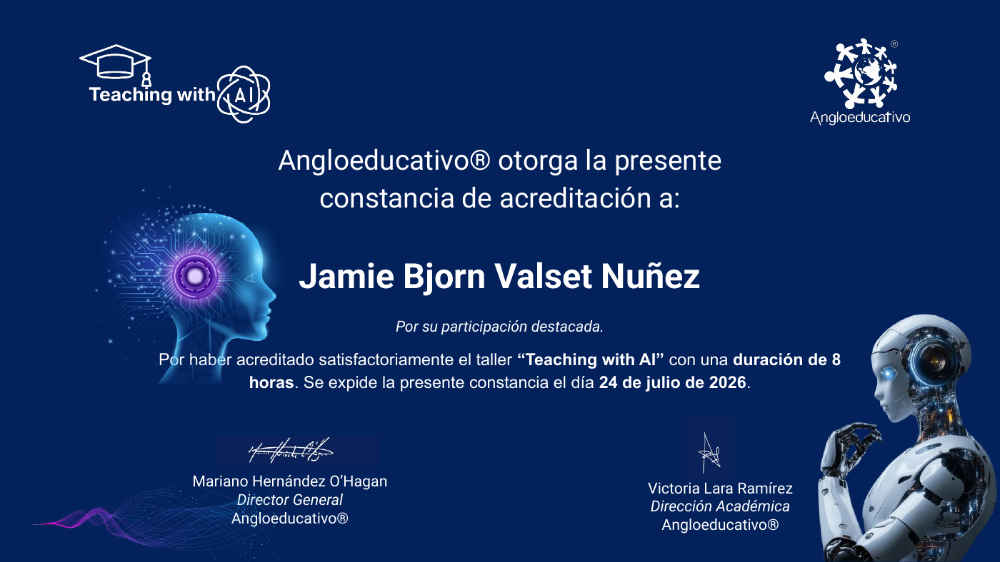
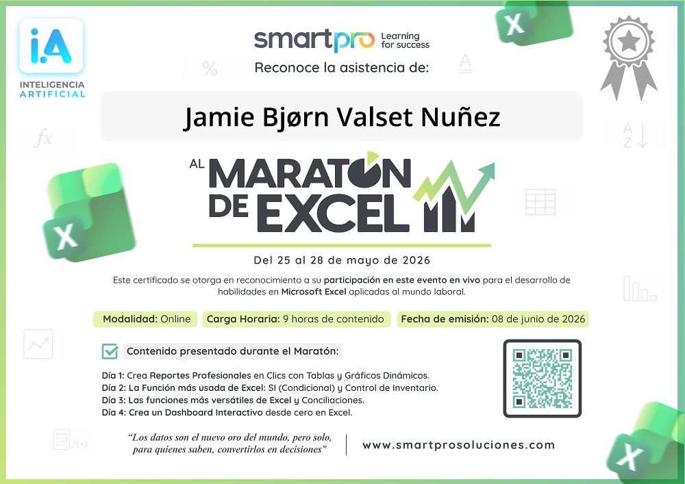
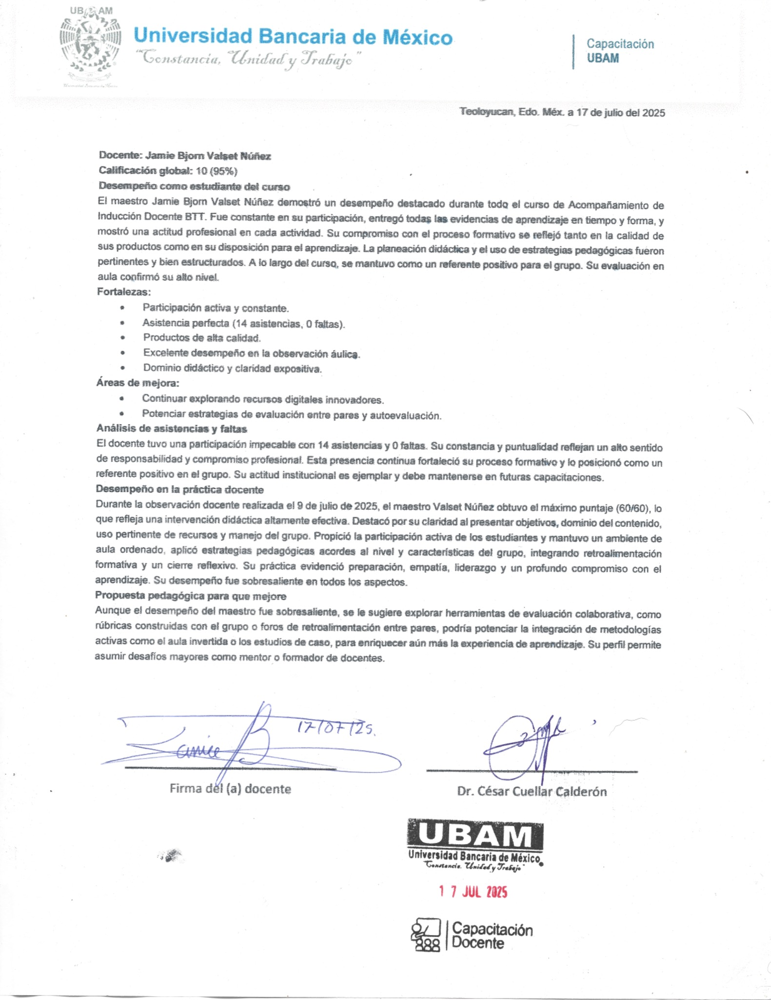
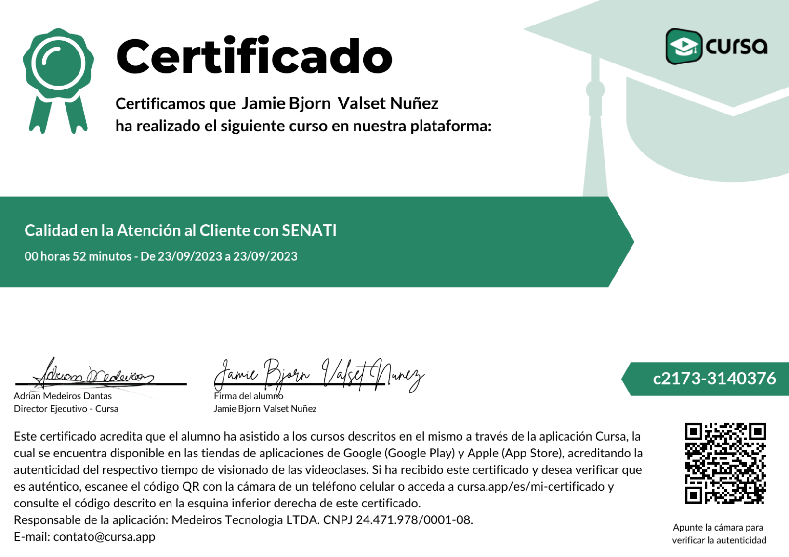
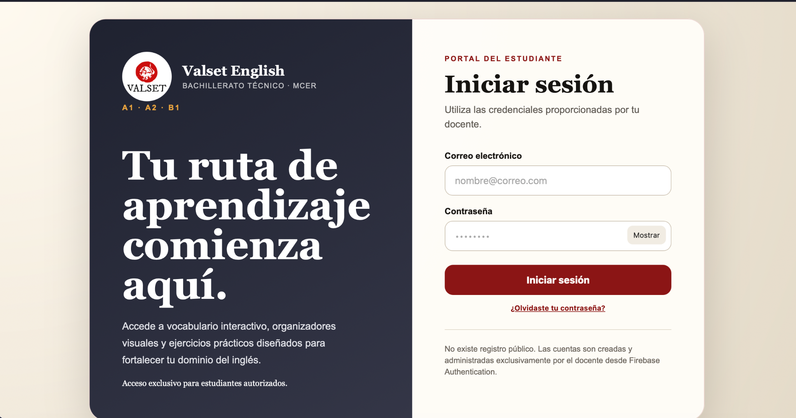
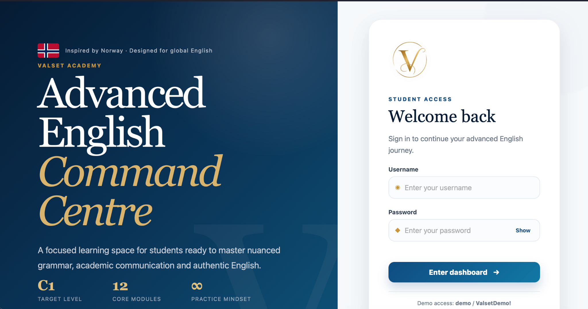
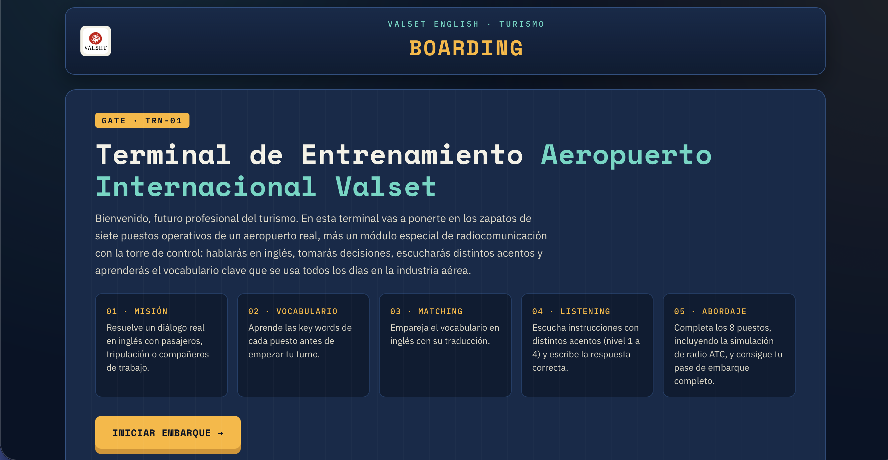
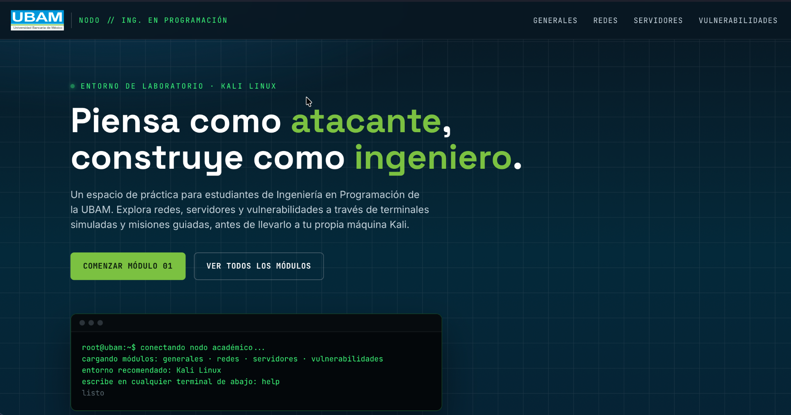

EspañolNativo
VALSET · Portafolio profesional
Jamie Bjørn Valset Nuñez
Docente de lengua inglesa · Diseñador instruccional · Innovador educativo
Experiencia en secundaria, bachillerato, educación superior y enseñanza de idiomas, con énfasis en tecnología educativa, diseño de recursos digitales y aprendizaje centrado en el estudiante.
Perfil internacional
Idiomas para la comunicación académica y profesional
InglésNativo
NoruegoNativo
FrancésB2
ItalianoA2
Presentación
Conoce mi perfil en un minuto
Video introductorio
Presentación profesional generada para este portafolio.
Perfil profesional
Educación, comunicación e innovación
Sobre mí
Soy licenciado en Administración de Empresas Turísticas y maestro en Ciencias de la Educación. Mi trayectoria integra docencia, gestión académica, comunicación, diseño instruccional y creación de experiencias digitales para el aprendizaje.
He trabajado con estudiantes de secundaria, bachillerato, educación superior y centros de enseñanza de idiomas. Mi práctica se orienta al logro de resultados de aprendizaje, la evaluación formativa y el uso responsable de tecnologías emergentes.
4Idiomas de trabajo
A1–C1Experiencia por niveles MCER
3+Niveles educativos
DigitalDiseño de recursos
Trayectoria
Experiencia profesional
2024–2026
Docente · Bachillerato Tecnológico Teoloyucan y Centro de Enseñanza de Idiomas
Planeación didáctica, diseño de actividades, evaluación, seguimiento académico, administración de grupos y elaboración de reportes académicos y administrativos.
2019–2024
Prácticas profesionales y servicio social · Escuela Secundaria Oficial 1063
Enseñanza de inglés, historia y geografía; captura y gestión de información; atención a usuarios; documentación; administración de grupos y resolución de conflictos.
2019
Practicante · Grand Palladium Resort Spa Hotel
Manejo documental, atención al cliente, organización de grupos, resolución de conflictos y planeación de eventos.
Formación académica
Aprendizaje continuo
Maestría en Ciencias de la Educación
Universidad Internacional de La Rioja · España
ConcluidaLicenciatura en Administración de Empresas Turísticas
Universidad Bancaria de México
2025Formación técnica en Turismo
Universidad Bancaria de México
2020Competencia lingüística
Capacidad de comunicación en contextos académicos, educativos, turísticos e interculturales.
🇪🇸
Español
Nativo
🇬🇧
Inglés
Nativo
🇳🇴
Noruego
Nativo
🇫🇷
Francés
B2
🇮🇹
Italiano
A2
Actualización profesional
Certificaciones y competencias

Tecnología educativa
Teaching with AI
Taller acreditado de ocho horas sobre inteligencia artificial aplicada a la docencia.
Angloeducativo · 2026Abrir PDF
Competencia digital
Maratón de Excel
Nueve horas de formación en reportes, tablas y gráficos dinámicos, funciones, conciliaciones y dashboards interactivos.
SmartPro · 2026Ver constanciaDesarrollo profesional
Oxford Professional Development: English Pronunciation for International Intelligibility
Certificado de asistencia enfocado en pronunciación inglesa e inteligibilidad en contextos internacionales.
Oxford University Press Abrir PDFDesarrollo profesional
Oxford Professional Development: Classroom Management
Formación orientada a la gestión efectiva del aula y al fortalecimiento de la práctica docente.
Oxford University Press Ver certificado
Evaluación institucional
Acompañamiento e inducción docente
Desempeño global de 95 %, asistencia perfecta y máxima puntuación en la observación de práctica docente.
Universidad Bancaria de México · 2025Ver documento
Servicio profesional
Calidad en la Atención al Cliente con SENATI
Formación en calidad de servicio, comunicación y atención eficaz de necesidades.
Cursa · SENATI · 2023Abrir PDFCompetencias profesionales
Innovación aplicada
Proyectos y recursos educativos

Abrir proyecto ↗
Plataforma educativa
Valset English
Portal de aprendizaje de inglés para bachillerato técnico, organizado por niveles del MCER y protegido mediante cuentas individuales administradas con Firebase.
Ver plataforma ↗
Abrir proyecto ↗
Inglés avanzado
Advanced English Command Centre
Espacio académico de nivel avanzado orientado al dominio de gramática compleja, comunicación académica y práctica auténtica del inglés.
Ver plataforma ↗
Abrir proyecto ↗
Simulador para turismo
Terminal de Entrenamiento Aeroportuario
Simulador contextualizado para practicar vocabulario, escucha, toma de decisiones y radiocomunicación en inglés mediante distintos puestos operativos de un aeropuerto.
Ver simulador ↗
Abrir proyecto ↗
Laboratorio técnico
Terminal educativa de ciberseguridad
Entorno de práctica para estudiantes de ingeniería en programación, con módulos de redes, servidores, vulnerabilidades y terminales simuladas inspiradas en Kali Linux.
Ver laboratorio ↗Contacto profesional
Conversemos sobre una oportunidad
Mi información personal no se muestra públicamente. Puede enviarme un mensaje mediante este formulario y responderé al correo que indique.